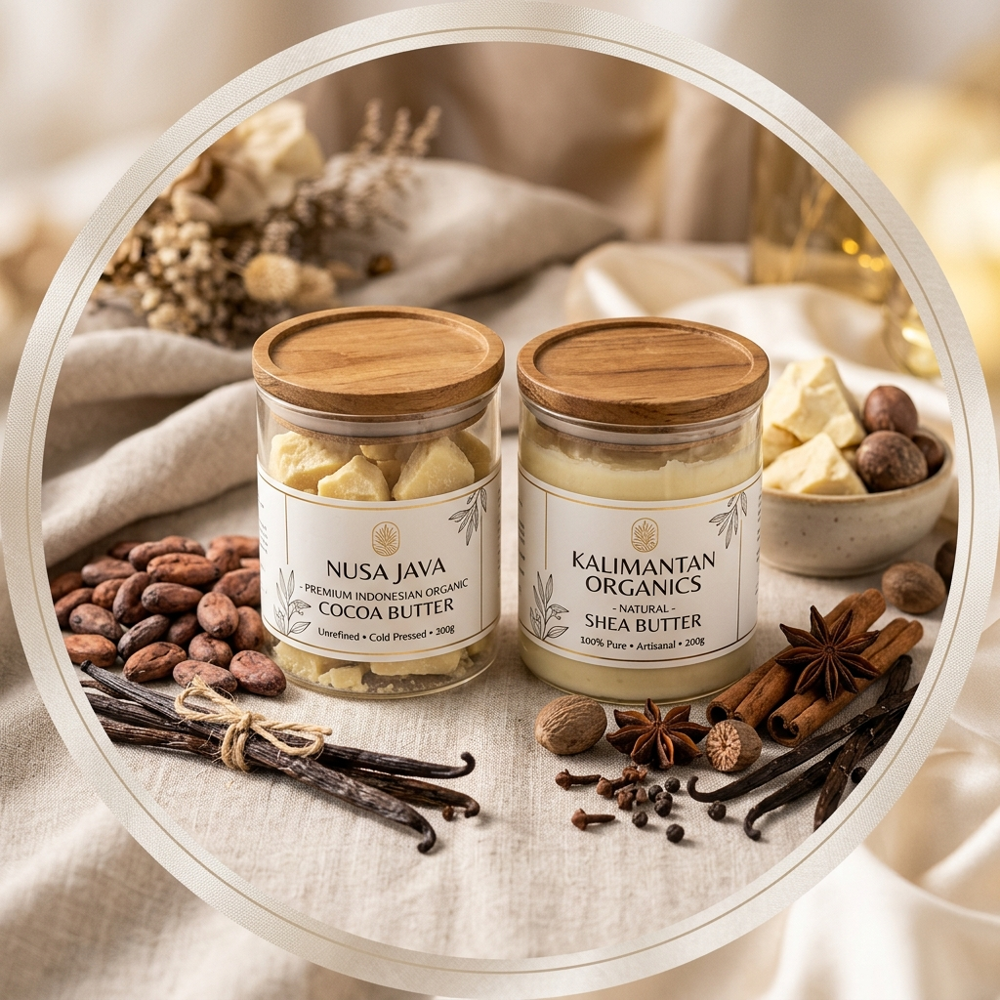

Platform satu pintu untuk komoditas unggulan lokal Indonesia (seperti artisan cocoa & shea butter, rempah, vanili, dan produk nabati). Dilengkapi verifikasi instan NIB/NPWP, studio smart RFQ Incoterms 2020, jaminan keamanan dana Escrow, serta tracking logistik kepabeanan terintegrasi.

Transparansi data agregat komoditas UMKM antar-wilayah Indonesia serta arsitektur pengamanan aliran dana ekspor berbasis milestone.
Empat modul terintegrasi untuk menyelesaikan kendala ekspor UMKM: legalitas, standardisasi kontrak internasional, kepastian dana, dan kepabeanan.
Studio negosiasi cerdas untuk menerbitkan Request for Quotation (RFQ), Proforma Invoice, dan Sales Contract berstandar resmi ICC Paris Incoterms 2020 secara instan dengan proteksi klausul hukum internasional.
Meniadakan risiko gagal bayar buyer bagi UMKM dan kerugian pembeli internasional. Dana dikunci di rekening bersama devisa resmi dan dicairkan bertahap berbasis pemenuhan dokumen logistik.
Audit instan kesiapan ekspor entitas UMKM melalui integrasi API ke database OSS BKPM, Ditjen Pajak, serta verifikasi kepatuhan sertifikasi mutu standar global.
Monitoring terintegrasi rantai pasok ekspor: pendaftaran PEB di sistem CEISA 4.0 Bea Cukai, status Jalur Hijau (SPE), stuffing depo, hingga Bill of Lading (B/L) pelayaran samudera.
Proses 5 langkah terstandardisasi yang mempermudah UMKM dari legalitas lokal hingga kontainer tiba di pelabuhan mancanegara.
UMKM menginput NIB 13-digit & NPWP. Sistem mengaudit database OSS BKPM, izin BPOM, dan sertifikasi Halal secara instan.
Penerbitan otomatis RFQ, Proforma Invoice, & Sales Contract berstandar Incoterms 2020 berstempel digital sah ICC.
Buyer menyetor 100% nilai kontrak ke Rekening Bersama resmi. DP 30% langsung dicairkan sebagai modal produksi UMKM.
Surveyor independen menguji mutu komoditas, sistem memicu pengajuan PEB CEISA 4.0 Bea Cukai dan terbit SPE Jalur Hijau.
Kontainer dimuat ke kapal, terbit Original On-Board B/L. Saldo escrow tersisa 100% otomatis lunas ke rekening UMKM.
Setiap entitas terhubung dalam satu rantai nilai yang transparan, aman, dan saling menguntungkan.
Mendapatkan perlindungan modal kerja melalui kepastian pembayaran dari Escrow, template kontrak perdagangan internasional tanpa biaya advokat mahal, serta akses langsung ke importir mancanegara.
Dana buyer terkunci di Escrow sebelum stuffing kontainer dimulai.
Proforma Invoice & Sales Contract Incoterms 2020 otomatis.
Profil eksportir terverifikasi diakses buyer 48 negara.
Eksplorasi modul interaktif: verifikasi KYC, Studio RFQ & Kontrak Incoterms 2020 terintegrasi kalkulator margin, simulasi Escrow, dan pelacakan B/L pabean.
Masukkan Nomor Induk Berusaha (NIB OSS 13 digit) dan Nomor Pokok Wajib Pajak (NPWP) untuk audit instan kesiapan ekspor.
| Deskripsi Spesifikasi Komoditas | Kuantitas | Harga Satuan | Total Amount |
|---|---|---|---|
|
Artisan Pure Java Cocoa Butter & Shea Butter
Fat Content 52-54%, FFA < 1.75%, Melting Point 34-36°C, Moisture < 0.2%
Kemasan: Glass Jar 200g food-grade, vacuum sealed & export master carton.
|
5,000 Units | $12.50 USD | $62,500.00 |
| Total Nilai Kontrak Ekspor: | $62,500.00 USD | ||
Simulasikan bagaimana dana pembeli diamankan 100% dalam rekening bersama devisa resmi dan hanya dicairkan jika tiap pemicu dokumen terpenuhi.
Buyer menyetor 100% ke Escrow Vault. 30% dicairkan ke UMKM sebagai modal kerja produksi.
Pemicu: Sales Contract TtdSurveyor merilis sertifikat analisis (COA). 30% dicairkan ke rekening eksportir.
Pemicu: Certificate of AnalysisBarang gate-in di pelabuhan & PEB jalur hijau disetujui. 20% dicairkan.
Pemicu: SPE CEISA Bea CukaiKontainer naik ke kapal & terbit On-Board Bill of Lading asli. Sisa 20% lunas.
Pemicu: Original On-Board B/LLacak status pengapalan internasional secara transparan menggunakan nomor Bill of Lading (B/L) atau Nomor Pendaftaran Ekspor (PEB).
Bergabunglah dengan ribuan UMKM Indonesia yang telah menikmati kepastian transaksi internasional dengan jaminan Escrow dan otomasi kepabeanan di platform NUSABRIDGE.
Konsultasi regulasi Incoterms 2020 & verifikasi NIB/NPWP gratis untuk UMKM binaan.
ekspor@nusabridge.id +62 812-3456-7890